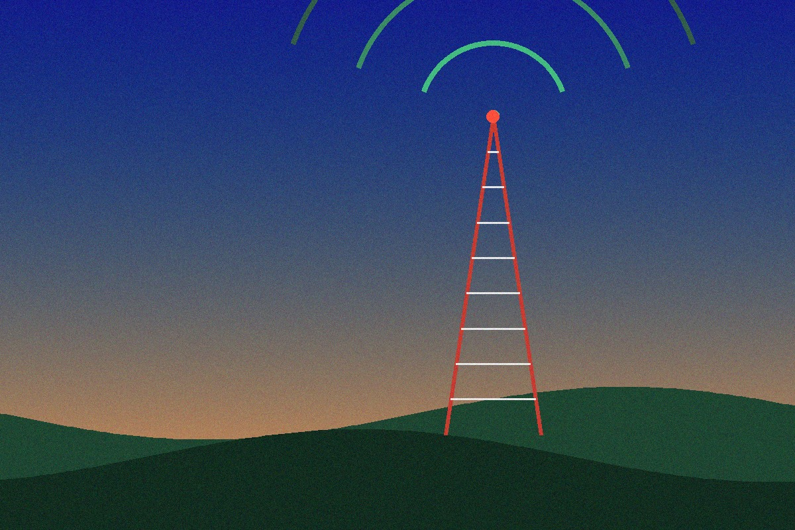

This picture started as a 334 KB photo. The host squeezed it to about 6 KB before sending it, and your browser showed a tiny blurry preview first while the rest arrived.

Videos work too. A normal video tag becomes a short, silent, looping clip: